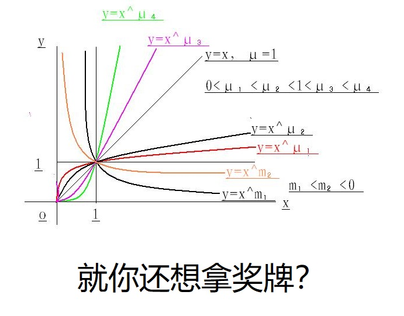

洛谷笔记 - P1010 [NOIP1998 普及组] 幂次方

别转了，我晕辣 @_@
复健 ing…
Welcome to Hexo! This is your very first post. Check documentation for more info. If you get any problems when using Hexo, you can find the answer in troubleshooting or you can ask me on GitHub.
这道题是备考摸鱼的时候做的，应该能算广度优先搜索的模板？
做这道题的时候我觉得我确实是个铸币。
复健用题（？）
复健训练，感觉良好…… 吧
1 | /* |
1 | //P1075 [NOIP2012 普及组] 质因数分解 |
1 | /* |
1 | /*--------------------------------------- |
1 | /*--------------------------------------------/ |
1 | /*-------------------------------------------/ |